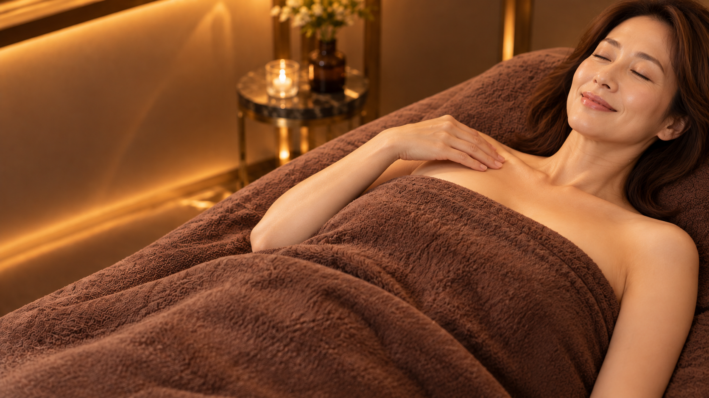
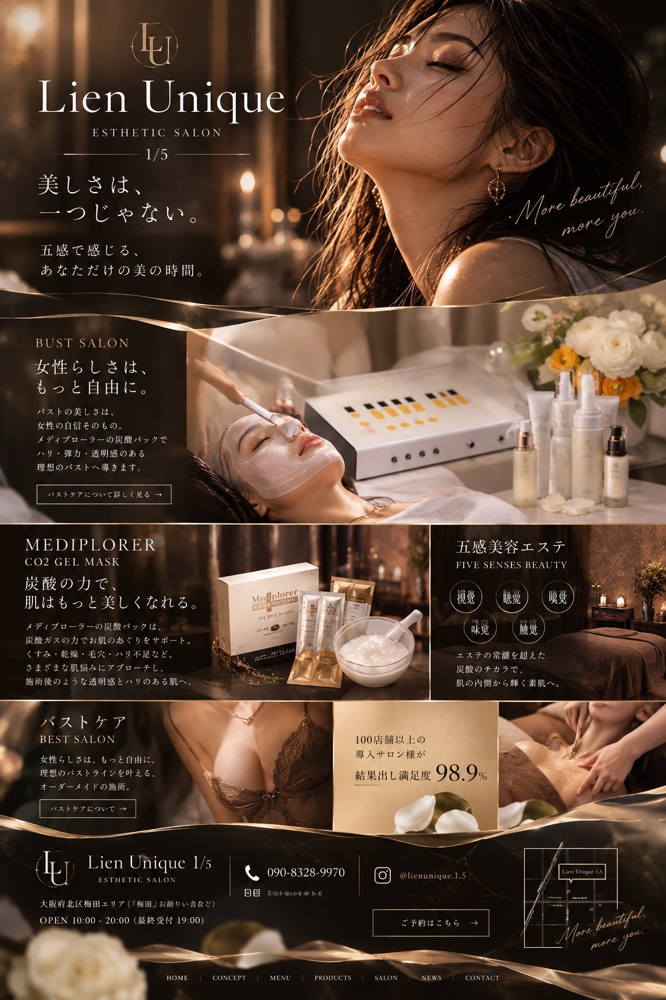

10枚を各1回だけ使用。上半身 → 相談の引き → オイルの接写 → 背中 → デコルテ → 足元からの引き → 本人が手を添えて確認 → 鏡 → 日常 → 店舗案内。48秒・無音の静止画プレビューです。ナレーションの想定読了時間に余白を設け、音声収録後に最終調整します。画像は原寸を保持。施術は演出イメージで、実際の施術内容・効果を示すものではありません。
C01 · 0–5秒
バストケア｜Lien Unique1/5｜ふんわりを目指す、 バストケア。

バストケア｜Lien Unique1/5
ふんわりを目指す、バストケア。
箕面｜Lien Unique1/5
モデルによる演出イメージ
画・動作冒頭から受領したブラ姿の上半身を全面に見せ、「バストケア」を明示。柔らかな印象のバストラインを目指す訴求で、施術結果の保証・実例ではない。
画角・見せ方肩からウエストの上半身。左の余白にバストケア名とコピー。
声の台本ふんわりを目指す、バストケア。
テロップふんわりを目指す、
バストケア。
C02 · 5–10秒
COUNSELING｜まずは、想いを 聞かせてください。
COUNSELING
まずは、想いを聞かせてください。
箕面｜Lien Unique1/5
モデルによる演出イメージ
画・動作今回受領した相談画像。丸い大理石テーブルと暖色の室内で、スタッフと目線を合わせて相談する。
画角・見せ方受領画像の全景。フェイシャル版と共通する丸テーブルの室内イメージ。
声の台本まずは、想いを聞かせてください。
テロップまずは、想いを
聞かせてください。
C04 · 13–18秒
バストケア｜バストのために、 自分をいたわる時間。
箕面｜Lien Unique1/5
施術構図案・実内容確認前
画・動作茶色のタオルをかけたうつ伏せ姿勢で、背中・肩甲骨まわりのケアを見せる。施術者は手元のみ。
画角・見せ方受領画像の全景。追加の拡大・色補正なし。
声の台本バストのために、自分をいたわる時間。
テロップバストのために、
自分をいたわる時間。
C05 · 18–24秒
バストケア｜丁寧なケアで、 ふんわりとしたラインを目指して。
バストケア
丁寧なケアで、ふんわりとしたラインを目指して。
箕面｜Lien Unique1/5
施術構図案・実内容確認前
画・動作仰向けで肩・鎖骨まわりをケアする手元を見せる。
画角・見せ方今回受領した、斜め上から肩・鎖骨まわりに寄った構図。顔は画角外。
声の台本丁寧なケアで、ふんわりとしたラインを目指して。
テロップ丁寧なケアで、
ふんわりとしたラインを目指して。
C07 · 27–32秒
AFTER CARE｜ケアのあとは、 そっと確かめて。

AFTER CARE
ケアのあとは、そっと確かめて。
箕面｜Lien Unique1/5
施術構図案・実内容確認前
画・動作本人が鎖骨まわりにそっと手を添え、ゆったりと過ごす。実際の効果や体験談を示すものではない。
画角・見せ方受領画像の全景。本人がそっと手を添える仕草を見せる。
声の台本ケアのあとは、そっと確かめて。
テロップケアのあとは、
そっと確かめて。
C08 · 32–37秒
AFTER CARE｜自分らしい美しさを、 大切に。
箕面｜Lien Unique1/5
モデルによる演出イメージ
画・動作相談時と同じ服の女性が鏡で装いを確かめる。効果の証明ではなく日常へ戻る気持ちの演出。
画角・見せ方横姿と鏡を同時に見せる膝上の中景。
声の台本自分らしい美しさを、大切に。
テロップ自分らしい美しさを、
大切に。
C09 · 37–42秒
EVERYDAY｜好きな服を、 自分らしく。
箕面｜Lien Unique1/5
モデルによる演出イメージ
画・動作服を着て日常へ。目指す気持ちのイメージとして見せる。
画角・見せ方顔アップにせず装いの中景。
声の台本好きな服を、自分らしく。
テロップ好きな服を、
自分らしく。
C10 · 42–48秒
LIEN UNIQUE 1/5｜バストケアのご相談は、 リアンへ。

バストケアのご相談

Lien Unique
ESTHETIC SALON
1/5
メニュー・ご相談はこちら
箕面｜Lien Unique1/5
モデルによる演出イメージ
画・動作店名と相談案内で締める。未確定の料金・予約先は入れない。
画角・見せ方サロンのワイド。
声の台本バストケアのご相談は、リアンへ。
テロップバストケアのご相談は、
リアンへ。